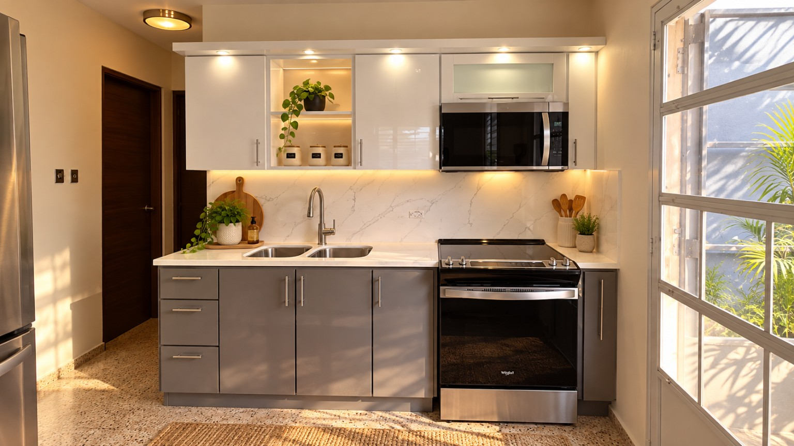
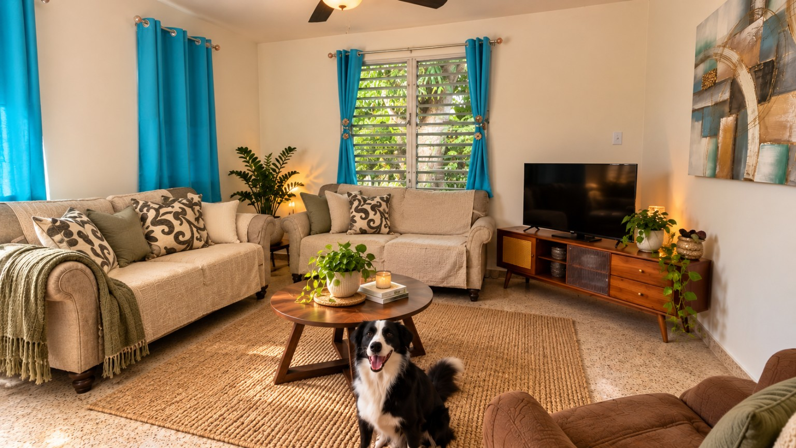
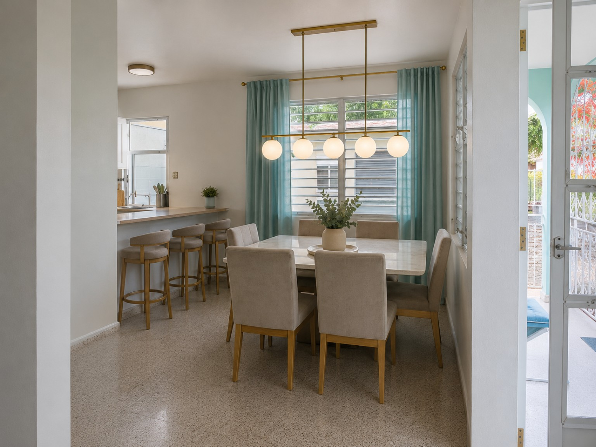
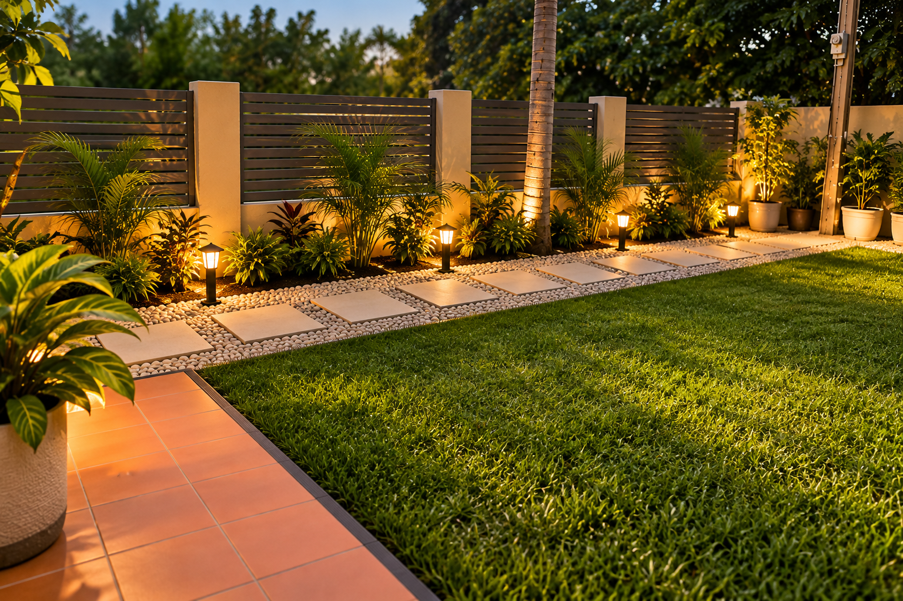

COCINA
Una cocina que sí se vive
Orden, luz cálida, plantas y detalles prácticos. Ideas nacidas de cambios reales para conseguir un espacio bonito sin perder de vista que aquí se cocina, se recoge y se vuelve a empezar.
Ideas, herramientas y pequeños descubrimientos para hacer la vida en casa más sencilla, bonita y feliz —con humanos, patas y alguna que otra huellita de gato.
Probar la primera herramienta →No buscamos una casa perfecta. Buscamos espacios que se sientan nuestros, soluciones que funcionen y cambios que hagan la vida cotidiana un poquito más bonita.

Orden, luz cálida, plantas y detalles prácticos. Ideas nacidas de cambios reales para conseguir un espacio bonito sin perder de vista que aquí se cocina, se recoge y se vuelve a empezar.

Textiles, madera, plantas y rincones que invitan a quedarse. Una sala puede verse cuidada y seguir siendo un espacio para conversar, descansar y compartir con las mascotas.

Un comedor sencillo, luminoso y preparado para la vida diaria. Pequeños cambios en iluminación, textiles y decoración pueden transformar el ambiente sin llenarlo de cosas.

Grama, caminos, iluminación y proyectos que van tomando forma poco a poco. El patio también es casa: se prueba, se cambia, se ensucia y se vuelve a inventar.
Detalles para crear ambientes cálidos, funcionales y con personalidad.
Soluciones sencillas sin pretender que todo esté perfecto las 24 horas.
De un cambio pequeño a esos “vamos a arreglar esto” que terminan siendo toda una aventura.
Momentos, rutinas, celebraciones y esas pequeñas cosas que terminan convirtiéndose en recuerdos. Esta sección irá creciendo con contenido de vida real, sin poses perfectas.
Plantas, grama, mantenimiento y proyectos de exterior contados desde la experiencia: lo que funciona, lo que toca repetir y lo que aprendemos por el camino.
Herramientas y recursos para organizar mejor sus cuidados, citas, vacunas, peso y todo eso que juramos que vamos a recordar.
Los gatos también cuentan; simplemente tienen otros planes. 😼
Un espacio para organizar vacunas, medicamentos, citas, peso, contactos importantes y datos de cada mascota.
En construcción ✨Convierte la edad cronológica de un perro o gato en una aproximación de etapa humana. Evitamos la vieja regla simplista de ×7.
Resultado educativo y orientativo; no sustituye orientación veterinaria.Productos que usamos, descubrimos o consideramos útiles para la casa, las mascotas y el jardín. Los enlaces de afiliado se identificarán claramente.
Detalles prácticos, organización y cosas bonitas que sí tienen función.
PróximamenteCamas, cuidado, accesorios y productos que hacen la convivencia más sencilla.
PróximamenteHerramientas y hallazgos para patios, plantas y proyectos de exterior.
PróximamenteMuy Nuestro irá creciendo con nuevas herramientas, guías, proyectos y favoritos para la vida en casa.